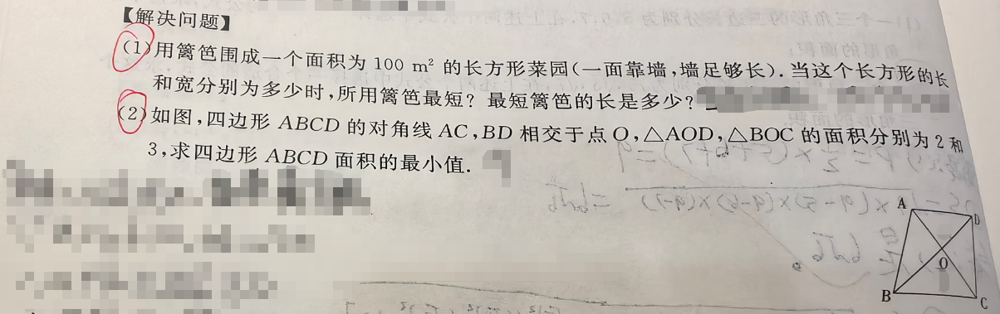
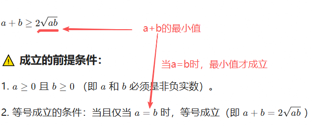
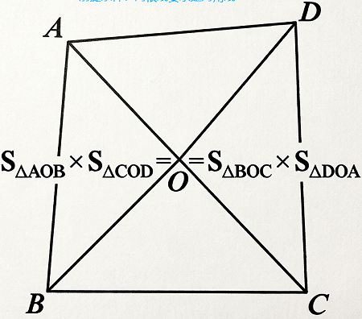

📷 点击查看原图
第（1）问 用篱笆围成一个面积为 的长方形菜园（一面靠墙，墙足够长）。当长方形的长和宽分别为多少时，所用篱笆最短？最短篱笆长多少？
第（2）问 如图，四边形 的对角线 、 相交于点 ，、 的面积分别为 和 ，求四边形 面积的最小值。
| 知识点 | 说明 |
|---|---|
| 均值不等式 | （），等号当 时成立 |
| 应用题建模 | 面积 = 长 × 宽；一面靠墙时篱笆围三面 |
| 对顶三角形性质 | 对角线分四边形为四个三角形，且 |
| 最值问题步骤 | 设元 → 列函数 / 找不变量 → 用均值不等式求最值 → 验证等号条件 |

设垂直于墙的边（宽）为 ，则平行于墙的边（长）为 。因长边靠墙，篱笆只需围另外三面：
由均值不等式：
当且仅当 ，即 ， 时取等号，此时长 。

对角线把四边形分成四个三角形，其中 与 为对顶三角形，满足：
已知 、，故 。设 ，，则 。
当且仅当 时取等号（此时对角线互相平分，四边形为平行四边形）。
📌 来源：南昌/江西中考「二次函数最值·篱笆围栏」同类真题（参考：南昌市九年级期中题 docin.com/p-4917004438.html；两面靠墙题 m.1010jiajiao.com/czsx/shiti_id_fd32630e909d229927b8388187cc2285）
题1（一面靠墙·求最大面积）：用 篱笆一面靠墙围长方形花圃，怎样围面积最大？最大面积是多少？📄 查看详细解答 →
题2（两面靠墙·求最短篱笆）：用篱笆围一个两面靠墙（直角墙角）的长方形菜园，面积固定为 ，至少需要多长篱笆？📄 查看详细解答 →
题3（对角线分面积·求最小总面积）：四边形 对角线交于 ，，，求四边形面积的最小值。📄 查看详细解答 →